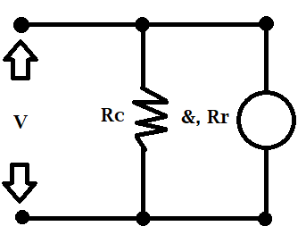

Resolução de motor
O motor de corrente contínua está ligado em parelo
com as bombinas de campo magnético do estator, ou seja, em shunt, defina

Resistência das bobinas de campo (Ω):
Resistência do rotor apresentado (Ω):
Corrente de entrada de motor (A):
Valor de tensão da fontes (V):
CALCULE
RESULTADOS
a) A corrente no rotor :
b) A força eletromotriz (fem - &) induzida no rotor:
c) As potências dissipadas nas bobinas de campo:
d) As potências dissipadas no rotor:
e) A potência de saída do motor:
f) A eficiência do motor: